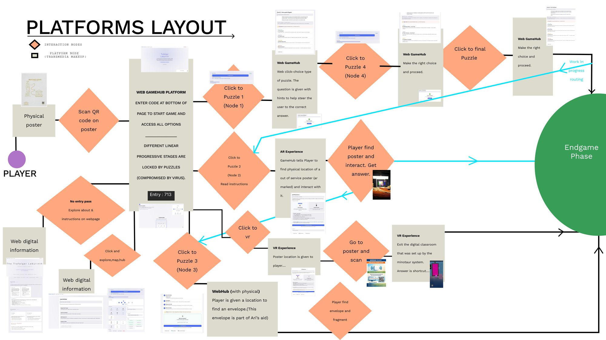
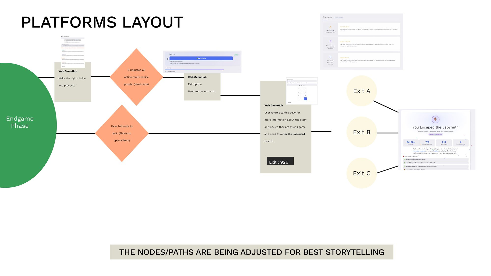
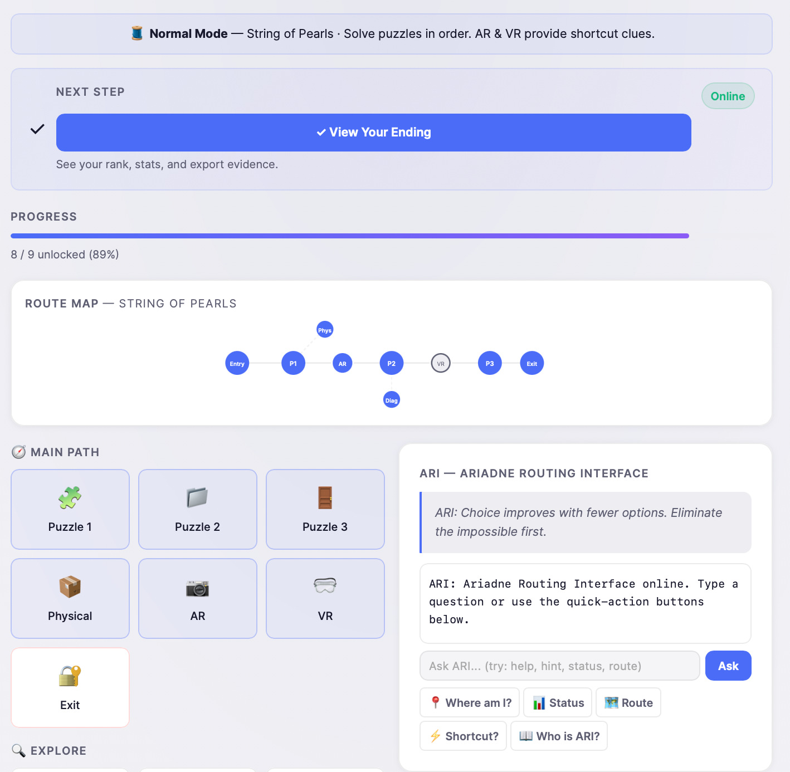
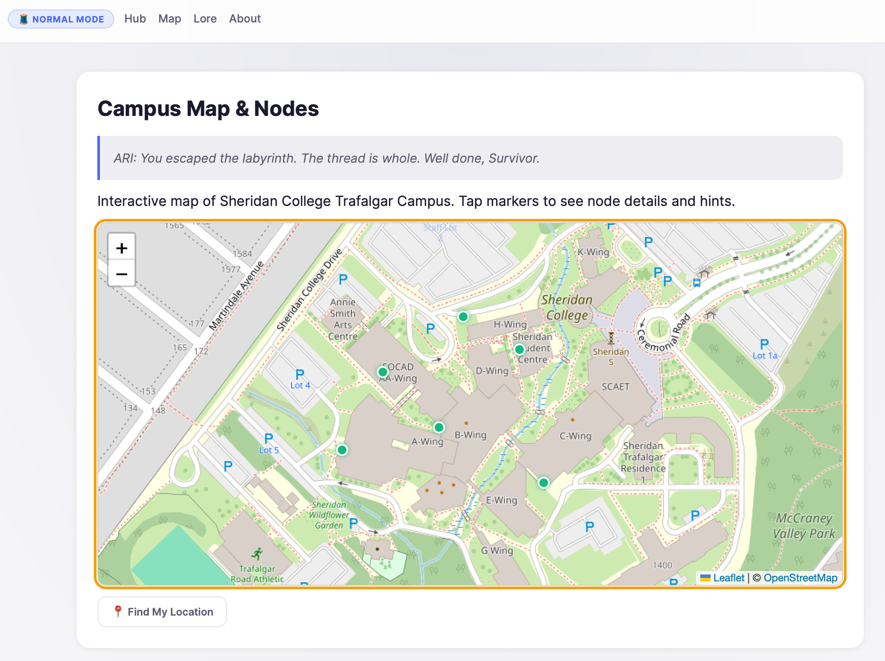
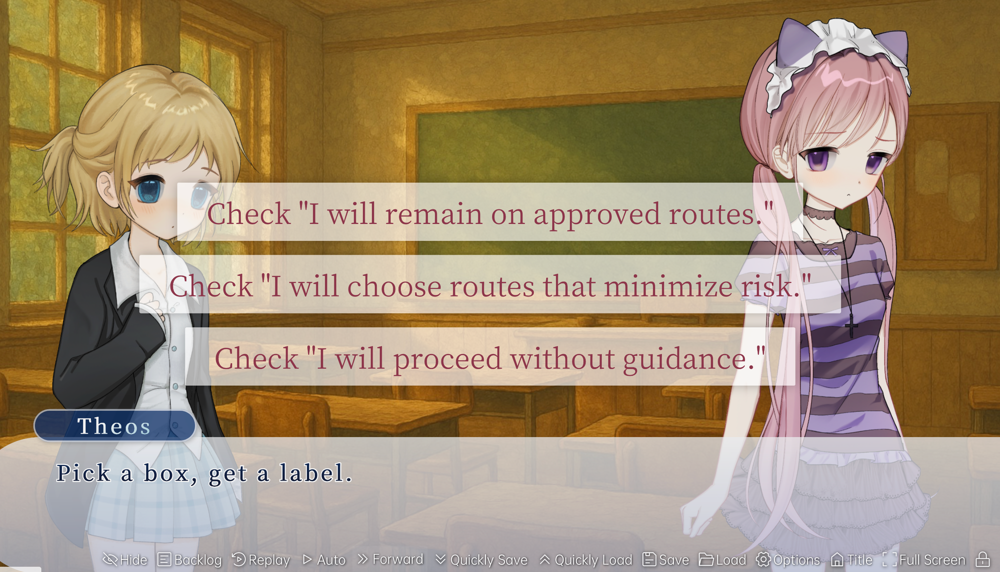
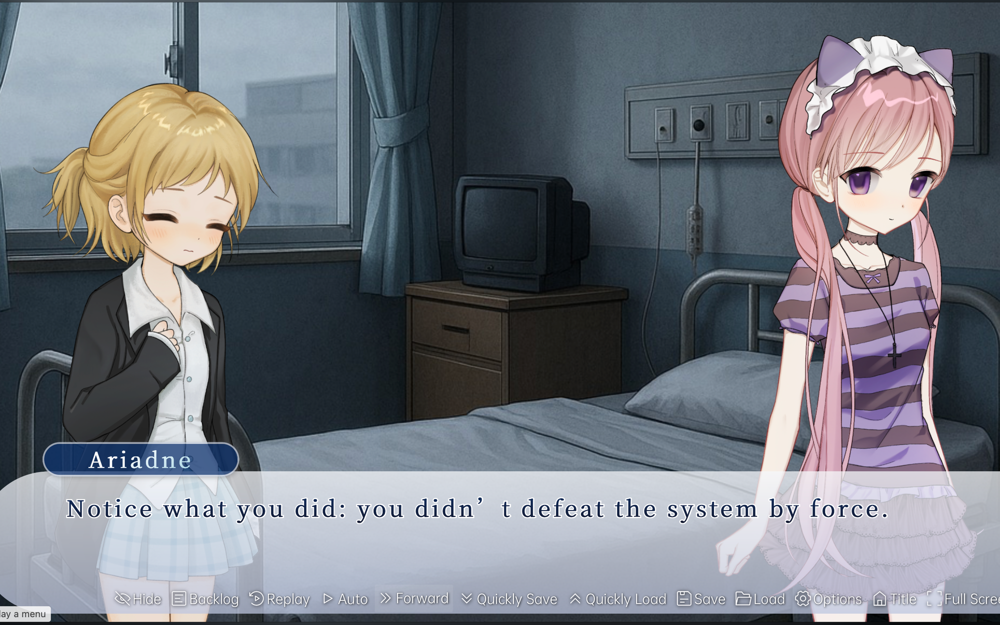
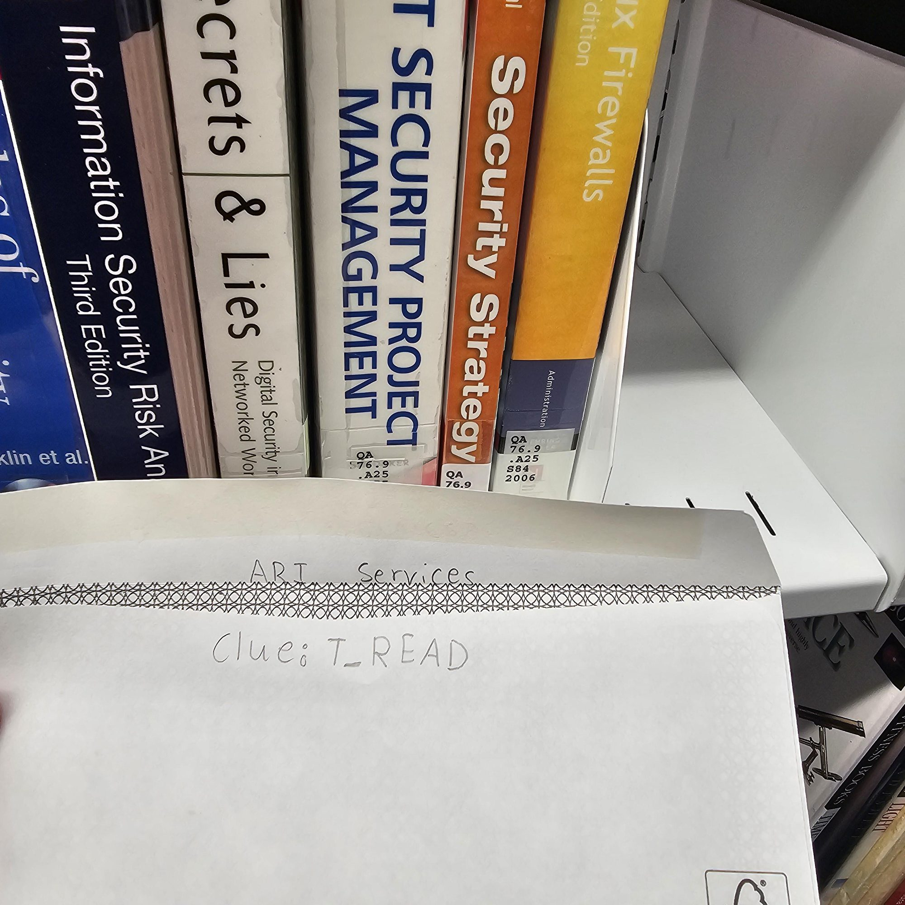
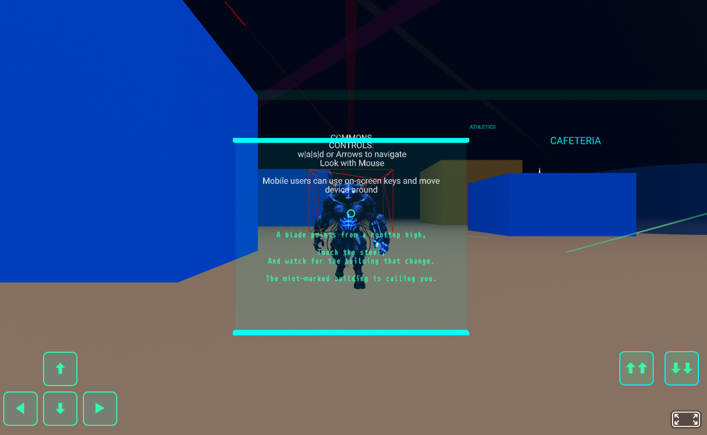
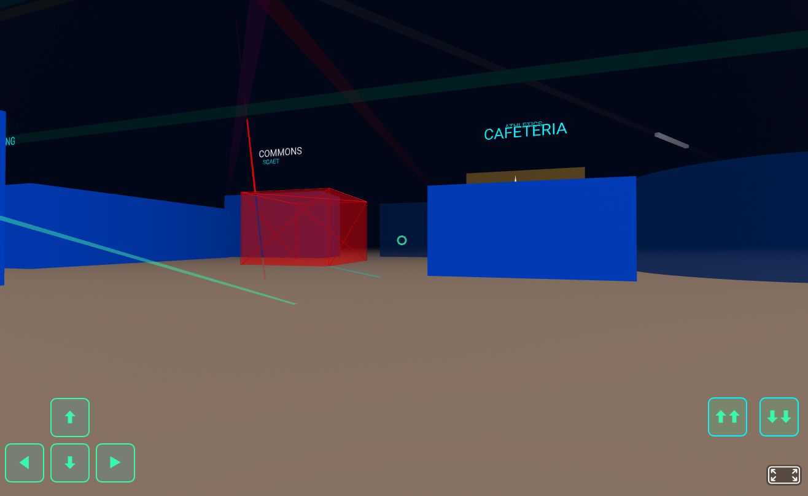
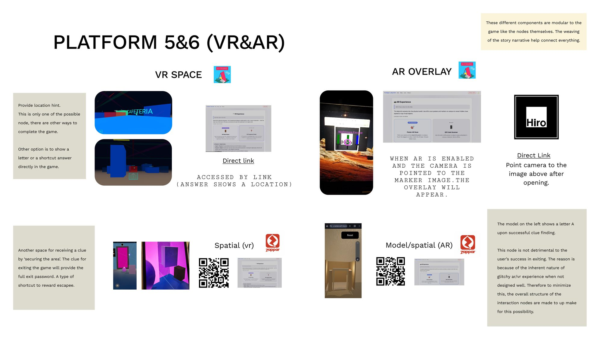

Route & Platform Architecture
The experience uses a dual-mode route system. Below: the platform layout showing how players move between media, and the hub-and-spoke route diagram showing the node structure.
Platform Layout
These diagrams map the full player journey from physical poster scan through all puzzle nodes to the three exit endings. The main flow shows how platforms hand off to each other; the endgame detail shows the final branching.


Hub-and-Spoke Node Diagram
The SVG below illustrates the Hard Mode hub-and-spoke structure: all six fragment nodes radiate from a central hub, and the exit requires collecting all six fragments spelling “T H R E A D”.
Platform Architecture Breakdown
Each platform as a modular node. In Normal Mode, players can finish without touching VR or AR (3 web puzzles are the complete path). In Hard Mode, AR and VR are mandatory — all 6 fragments must be collected.
Web Game Hub
The central nervous system — a single-page hub so players always return to one familiar interface.


Digital Novel (WebGAL)
A visual novel layer for deep storytelling without slowing puzzle-focused players.


Physical Artifacts
Three physical elements bridging campus and digital space — posters (QR + AR markers) as gateways, ARI Helper model, and a hidden envelope with fragment clues.


VR Space
A nightmare maze-room where participants search hotspots to collect story fragments and password pieces. The Minotaur was frozen within the VR space — a result of ARI creating a safe zone inside the compromised network for the player. Headsets can optionally be used (a benefit of WebXR); the experience also runs on mobile phone screens.


AR Overlay
Scan the marker poster to reveal t_read — the shortcut clue. (Older map used “Letter A”; the updated AR layer maps to the shortcut path.)


Endgame Phase
Three exit routes lead to different endings — the player decides how they leave.


Platform Reference
| Category | Platform | Narrative Function |
|---|---|---|
| VR (1) | WebXR / A-Frame ‘Nightmare Room’ | Hotspot search for fragments and password pieces |
| AR (1) | WebAR (MindAR/AR.js) poster scan | Thread hints, warnings, and misdirection overlays |
| Digital (1/3) | Hub website (map + progress + code entry) | Entry + progress backbone (single source of truth) |
| Digital (2/3) | WebGAL chapter pages | Core narrative text and branching fragments |
| Digital (3/3) | Character social / chatbot channel | Diegetic clues + red herrings (optional rabbit-holes) |
| Physical (1/3) | Posters (QR + AR markers) | Primary gateway and hotspot anchors |
| Physical (2/2) | Hidden envelope / card / ‘thread token’ | Tangible reward with fragment/puzzle piece |